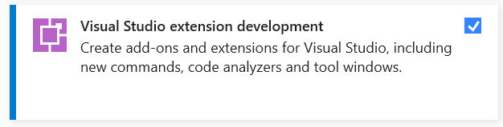
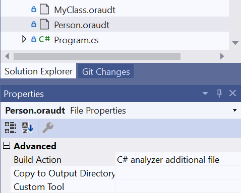
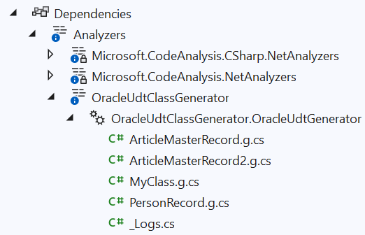
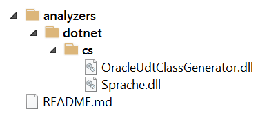
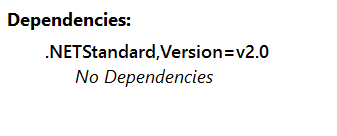

Introduction
Working with Oracle recently, I found myself wanting an equivalent of SQL Server’s
Table-Valued Parameters - a way to pass structured records, or tables of such records,
into stored procedures. The Oracle equivalent is the
User-Defined Data Type
but using them requires quite a bit of work. I’ve created
BassUtils.Oracle
which contains helpers for creating the correct OracleCommand parameters, described
in a previous blog post.
But that still leaves you having to manually code the C# class that Oracle requires
to map them to and from the Oracle SQL types. And it’s far from a POCO -
example here -
and has some strange, hard-to-discover rules, such as that all the Oracle field names
have to be in UPPERCASE or it just won’t work.
Given that these classes all follow the same format it sounded like the perfect opportunity to create a source generator and to use a DSL (Domain-Specific Language) to simplify the definition of the classes. While the classes themselves are voluminous there’s not actually a lot of information required. It’s possible to capture it all in a significantly shorter form, an example of which is:
class PersonRecord MYSCHEMA.objPerson
Collection PersonArray MYSCHEMA.tblPerson
Namespace People
Fields [
int Age,
FirstName,
LastName
]
To go from this to a C# class the steps are
- Parse this text into a specification, held in a C# class.
- Use the specs to generate C# source code using a Source Generator
- Package the source generator as a NuGet package.
This post describes how I performed each of these steps. If you find yourself wanting to generate a DSL-based Source Generator you can use this as a template. The finished generator is availble on NuGet as OracleUdtClassGenerator and the source code is available on GitHub. A list of current C# Source Generators exists which may provide help and ideas for your own implementation.
Parsing
My first thought was “this DSL is so simple I could parse it with a regex”. But the regex got bigger and nastier and I soon abandoned that idea. So what other approaches are there? Obviously I could write a custom parser all by myself, and while that is the approach taken by Luca on the Microsoft team it’s a little more work than I was hoping for. A full blown parser generator such as Antlr seemed like overkill, and installing Java is not something I wanted to do for this task.
Now there is a thing called parser combinators, which I first came across in the Rust world, though I never had the need to use it and found the intros confusing, but it did stick in my mind as ‘should be simple if I ever need to write a parser’. Briefly, parser combinators is an approach whereby you write lots of little parsers to recognise small pieces of text - like the word ‘class’ or ‘Fields’ or a newline - and then combine them with combinators like AND and OR or sequencing to make new, larger parsers. Continue until you have a parser that can recognise your entire input.
This approach has two great advantages - you don’t need to learn a new language to write a grammar file, and it lends itself to stepwise refinement, so you can start simple and test your parsers as you go along, gradually building them up to something more complex.
Write unit tests to test your parser on all possible input variants. It is a lot faster and easier than testing it in a NuGet package.
A little Googling brought me to Sprache, a parser combinator library for C# (Sprache is German for ‘language’). There are good introductory articles by Nicholas Blumhardt and Thomas Levesque, and Justin Pealing has produced a whole list of reference articles on different Sprache techniques.
The grammer for my DSL is specified as a series of parsers using LINQ expressions. You can
probably figure out what is happening just by looking at the code (TargetClassSpecification is
the DTO that contains all the parsed information):
static readonly Parser<TargetClassSpecification> TargetClassSpecificationParser =
from classNames in ClassNameParser
from collectionNames in CollectionNameParser.Optional()
from namespaceName in NamespaceParser.Optional()
from filename in FilenameParser.Optional()
from ddspec in DebugParser.Optional()
from tsspec in ToStringParser.Optional()
from fields in FieldListParser
select new TargetClassSpecification
{
FileName = filename.GetOrDefault(),
Namespace = namespaceName.GetOrDefault(),
ClassName = classNames.Item1,
CollectionName = collectionNames.IsDefined ? collectionNames.Get().Item1 : null,
OracleRecordTypeName = classNames.Item2,
OracleCollectionTypeName = collectionNames.IsDefined ? collectionNames.Get().Item2 : null,
DebuggerDisplayFormat = ddspec.GetOrDefault(),
ToStringFormat = tsspec.GetOrDefault(),
Fields = fields
};
This declares one parser, which is composed from a sequence of sub-parsers such as ClassNameParser and
CollectionNameParser (which is optional). If the entire parse succeeds then a new TargetClassSpecification
object is created. At this level, most of the interesting code is tucked away in the sub-parsers, most of which
return single strings, but ClassNameParserand CollectionNameParser return tuples consisting of two strings.
I really admire the way that Sprache leverages LINQ to express sequencing.
If we dig into ClassNameParser we can see some of the lower-level techniques.
static readonly Parser<(string, string)> ClassNameParser =
from _ in Parse.IgnoreCase("CLASS").TokenOnLine()
from csharpClassName in Parse.Identifier(Parse.Letter, TokenChar).TokenOnLine().Text()
from oracleObjectTypeName in Parse.Identifier(Parse.Letter, TokenChar).TokenOnLine().Text()
from _2 in OptionalCommaParser
select (csharpClassName, oracleObjectTypeName);
This is designed to parse the first line of this text:
class PersonRecord MYSCHEMA.objPerson
Collection PersonArray MYSCHEMA.tblPerson
...
First we look for the word “CLASS” to start off the entire specification. We use Parse.IgnoreCase in preference
to Parse.String here so the user can write in any case they want. TokenOnLine() eats whitespace around
tokens but doesn’t consume newlines. (I had to write this specially because I used newline as a separator rather
than requiring a comma. This was probably a mistake, I should have used comma and the built-in Token parser
which does eat newlines). Text() turns a list of parsed chars into a string. Finally, if the parse succeeds
the from _ means “I don’t care what you parsed, throw it away”. Since the word “class” is just a keyword and
carries no information we need we can just dispose of it.
We do want to get the C# class name and the Oracle Object Type Name because we need them both for
the code generation step. All my sub-parsers leverage the Parse.Identifier(first_char, subsequent_chars)
built-in parser. I’ve configured TokenChar so that this accepts letters, numbers, and dots, so that it can parse
“MYSCHEMA.objPerson” as well as “Person.g.cs” and “PersonRecord”.
OptionalCommaParser is a ‘tidy-up’ operation. It greedily consumes input consisting of either a comma or
whitespace and then stops. This means that the overall parser will be in a position to start the next parser, in
this case we will be at the ‘C’ in “Collection”.
The other individual parsers for the namespace, debug display attribute etc. are all similar, and all optional.
Finally FieldListParser returns a list of FieldSpecification DTOs.
Notice how sequencing is handled simply by adding a new LINQ from expression. It’s very easy to build
up from simple parsers to the final one.
The TargetClassSpecificationParser isn’t actually the final word: the parsing is done by
this higher-level parser:
static readonly Parser<List<TargetClassSpecification>> TargetClassSpecificationListParser =
from t in TargetClassSpecificationParser.Many()
select t.ToList();
This really demonstrates the power of the combinator approach with the .Many() call being all that
is required to say “parse a list of these things from the input” rather than just one.
Drill-down into FieldListParser
FieldListParser shows a couple of interesting techniques. It is defined as:
static readonly Parser<List<FieldSpecification>> FieldListParser =
from open in FieldKeywordParser
from elements in FieldParser.DelimitedBy(FieldSeparatorParser)
from _ws1 in Parse.WhiteSpace.Many()
from close in Parse.Char(']')
from _ws2 in Parse.WhiteSpace.Many()
select elements.ToList();
static readonly Parser<string> FieldSeparatorParser =
from _ in Parse.LineEnd.Or(Parse.String(","))
select "";
// Most consuming parser first.
static readonly Parser<FieldSpecification> FieldParser =
ThreePartFieldParser
.Or(TwoPartFieldParser)
.Or(OnePartFieldParser);
FieldKeywordParser just eats the “Fields [” text, then we use FieldParser
to parse an individual field, which may have one, two or three parts. Since the
first parser to match terminates the parsing, we use the most specific three-part
matcher as the first, then try for a two-part match, then finally fall back
to the one-part matcher. We combine FieldParser using the Sprache built-in
DelimitedBy which makes it parse a list of fields, each field being separated by
FieldSeparatorParser - which may be a newline or a comma. This works because we
don’t allow comma as a character in a token. You’ll notice we explicitly eat
whitespace before we get to the closing ‘]’ token. This is something of a theme,
you have to consume whitespace yourself, either like this or by using Token or
related methods.
The 3 field parsers are all similar, here is the three-part one:
static readonly Parser<FieldSpecification> ThreePartFieldParser =
from typeName in Parse.Identifier(Parse.Letter, TokenChar).TokenOnLine().Text()
from propertyName in Parse.Identifier(Parse.Letter, TokenChar).TokenOnLine().Text()
from oracleName in Parse.Identifier(Parse.Letter, TokenChar).TokenOnLine().Text()
select new FieldSpecification
{
DotNetDataTypeName = typeName,
PropertyName = propertyName,
OracleFieldName = oracleName,
};
Notice that at this level none of the properties are optional. The two-part is then
defined to omit oracleName:
static readonly Parser<FieldSpecification> TwoPartFieldParser =
from typeName in Parse.Identifier(Parse.Letter, TokenChar).TokenOnLine().Text()
from propertyName in Parse.Identifier(Parse.Letter, TokenChar).TokenOnLine().Text()
select new FieldSpecification
{
DotNetDataTypeName = typeName,
PropertyName = propertyName,
};
An alternative implementation could use a single FieldParser which gathers 1, 2 or 3 strings and then assigns them to the appropriate properties of the
FieldSpecificationdepending on how many strings were present.
You can see the whole set of parsers at the Github repository but that’s the main ones. The stepwise refinement continues down to lower and lower levels until you reach parsers for individual words and characters.
The top-level method that drives the parsing is defined like this:
public static List<TargetClassSpecification> ParseTargetSpecs(string input)
{
input = input.Trim();
var specs = TargetClassSpecificationListParser.Parse(input);
return specs;
}
Generating the UDT
With parsing the input taken care of we can move on to the second part, creating a C# source generator. First you’ll need to install the VS Extension Development Pack using the Visual Studio Installer:

A generator is quite easy to write - but debugging it is a different matter, more on that later. To start, you have to implement the ISourceGenerator interface. Create a class like this
using Microsoft.CodeAnalysis;
using Microsoft.CodeAnalysis.Text;
[Generator]
public class OracleUdtGenerator : ISourceGenerator
{
public void Initialize(GeneratorInitializationContext context)
{
}
public void Execute(GeneratorExecutionContext context)
{
}
}
The body of your generator goes in the Execute() method. For this source generator
I don’t need to do anything in Initialize(), but if necessary this is where
I would create a SyntaxReceiver for example if I wanted to generate based on the C# syntax tree. But
my use case is much simpler: OracleUdtClassGenerator is used by adding files ending with .oraudt
to a project as additional files:

So all we need to do during generation is find all these files, extract the text, parse it, and use the parsed specifications to generate C#:
public void Execute(GeneratorExecutionContext context)
{
try
{
// Generating as we find each file produces better logs.
foreach (var file in context.AdditionalFiles)
{
if (Path.GetExtension(file.Path).Equals(".oraudt", StringComparison.OrdinalIgnoreCase))
{
Logger.Log($"Found file {file.Path}");
ProcessAdditionalFile(context, file);
}
}
}
catch (Exception ex)
{
Logger.Log(ex.ToString());
}
Logger.WriteLogsToFile(context);
}
private void ProcessAdditionalFile(GeneratorExecutionContext context, AdditionalText file)
{
try
{
var text = file.GetText()?.ToString();
if (!string.IsNullOrEmpty(text))
{
ProcessAdditionalFileContents(context, file, text);
}
}
catch (Exception ex)
{
Logger.Log(ex.ToString());
}
}
private void ProcessAdditionalFileContents(GeneratorExecutionContext context, AdditionalText file, string text)
{
try
{
var targetSpecs = Grammar.ParseTargetSpecs(text);
foreach (var spec in targetSpecs)
{
Logger.Log($" Found spec for {spec.ClassName} with {spec.Fields.Count} fields");
CreateSourceFile(context, file, spec);
}
}
catch (Exception ex)
{
Logger.Log(ex.ToString());
}
}
Note the call to Grammer.ParseTargetSpecs(text) - this is where we pass the contents of the
.oraudt file into the Sprache grammar parser and get back a list of class specifications which
will drive the C# source code generation in CreateSourceFile.
A note on the logging and exception trapping in these methods. During development debugging source generators is something of a pain. You can attach a debugger to the running generator using:
if (!Debugger.IsAttached)
{
Debugger.Launch();
}
but I found it preferable to generate a log as an array of strings as the generator runs and then write that out to a file as the final step. The exception blocks ensure that if something blows up on one file that the generator continues and tries to complete as much work as possible. The results of running the generator are visible under the ‘Analyzers’ node in Visual Studio. (Visual Studio can sometimes be a bit reluctant to show these files, restarting VS will make them visible). The ‘_Logs.cs’ file contains the log messages inside a C# comment, looking something like this:
/*
DateTime.UtcNow: 2022-01-01T22:33:03.5397481Z
Found file C:\repos\OracleUdtClassGenerator\OracleUdtClassGenerator.ConsoleTestHarness\ArticleMaster.oraudt
Found spec for ArticleMasterRecord with 17 fields
Generated file ArticleMasterRecord.g.cs in namespace OracleUdtClassGenerator.ConsoleTestHarness
Found file C:\repos\OracleUdtClassGenerator\OracleUdtClassGenerator.ConsoleTestHarness\MyClass.oraudt
Found spec for MyClass with 5 fields
Generated file MyClass.g.cs in namespace MyNamespace
Found file C:\repos\OracleUdtClassGenerator\OracleUdtClassGenerator.ConsoleTestHarness\SubFolder\ArticleMaster2.oraudt
Found spec for ArticleMasterRecord2 with 17 fields
Generated file ArticleMasterRecord2.g.cs in namespace OracleUdtClassGenerator.ConsoleTestHarness.SubFolder
Found file C:\repos\OracleUdtClassGenerator\OracleUdtClassGenerator.ConsoleTestHarness\Person.oraudt
Found spec for PersonRecord with 3 fields
Generated file PersonRecord.g.cs in namespace People
*/

If the generator is not working correctly, you will probably get the dreaded ‘not generating files’ error:
Catching all exceptions and logging them prevents this and also gives a clue as to what is going wrong.
The CreateSourceFile method
This bit of code, which does the actual work of creating the C# classes, is the longest
but least interesting part of the project. It basically uses the TargetClassSpecification
DTO to drive the output of the C# code into a StringBuilder, and when done it adds
the contents of the builder to the generation context:
var source = GenerateSourceText(context, spec, ns);
var filename = $"{spec.ClassName}.g.cs";
Logger.Log($" Generated file {filename} in namespace {ns}");
context.AddSource(filename, SourceText.From(source, Encoding.UTF8));
I made use of a utility class I have written called an
IndentingStringBuilder
to simplify the C# generation. It indents when you call BeginCodeBlock and outdents
automatically on Dispose, so you can do
using (sb.BeginCodeBlock())
{
sb.AppendLine("public IOracleCustomType CreateObject()");
using (sb.BeginCodeBlock())
{
sb.AppendLine($"return new {spec.ClassName}();");
}
}
// results in
{
public IOracleCustomType CreateObject()
{
return new PersonRecord();
}
}
This class lives in my BassUtils NuGet package, but I copied and pasted it into the generator to avoid having another NuGet dependency to deal with (see below for the problems they cause). This thinking also meant I decided not to use a templating library to assist with the code generation.
Packaging as a NuGet Package
When packaged as a NuGet package, we want our source generator to run at compile time only, and not to become a deployment dependency of the project that it is deployed in. I followed the official recipe to do this:
<PropertyGroup>
<GeneratePackageOnBuild>true</GeneratePackageOnBuild>
<!-- The generator lib is used only at compile time, clients do not need it at run time as it
contains nothing they use. This stops NuGet from packing anything from this project, so we
will include dependencies manually below. -->
<IncludeBuildOutput>false</IncludeBuildOutput>
<!-- Change the default output folder for the build -->
<BuildOutputTargetFolder>analyzers</BuildOutputTargetFolder>
</PropertyGroup>
Now that everything is being packed into an ‘analyzers’ folder, you will start getting this warning from NuGet.
warning NU5128: Some target frameworks declared in the dependencies group of the nuspec and the lib/ref folder do not have exact matches in the other location. Consult the list of actions below:
warning NU5128: - Add lib or ref assemblies for the netstandard2.0 target framework
You can suppress this in the project file:
<PropertyGroup>
<NoWarn>NU5128</NoWarn>
</PropertyGroup>
We have to ensure that the NuGet package includes the dependencies that we used while
writing it. If we don’t do this users of the NuGet will get a runtime error along the lines
of ‘cannot find file or assembly…'. For our OracleUdtClassGenerator, it’s just Sprache:
<ItemGroup>
<!-- Generator dependencies -->
<PackageReference Include="Sprache" Version="2.3.1" PrivateAssets="all" GeneratePathProperty="true" />
</ItemGroup>
<ItemGroup>
<!-- Package the generator in the analyzer directory of the nuget package -->
<None Include="$(OutputPath)\$(AssemblyName).dll" Pack="true" PackagePath="analyzers/dotnet/cs" Visible="false" />
<!-- Package the our dependencies alongside the generator assembly -->
<None Include="$(PkgSprache)\lib\netstandard2.0\Sprache*.dll" Pack="true" PackagePath="analyzers/dotnet/cs" Visible="false" />
</ItemGroup>
Notice how everything is packaged into the ‘analyzers’ folder, you can examine the final folder structure using the NuGet Package Explorer:

The package should have no dependencies:

And that completes the NuGet package.
One last thought: I found it easier to test the generator as as a NuGet package within my solution, rather than adding a Project Reference. As we have seen, there are significant complexities in creating the NuGet package and using a Project Reference doesn’t exercise those scenarios at all.